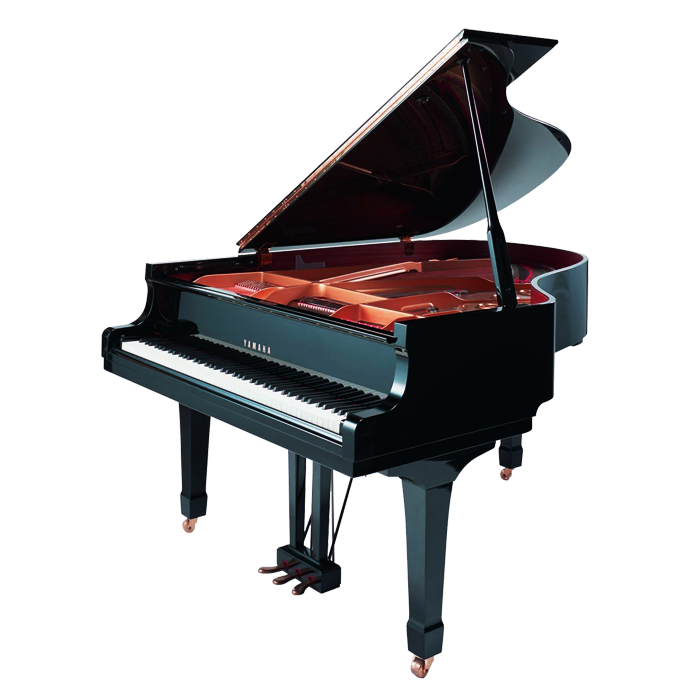

Instrumentos de Teclas
Os instrumentos de teclas combinam melodia, harmonia e ritmo em um único instrumento. O piano, teclado e órgão são os representantes mais destacados desta família.
Piano: Indispensável como instrumento solista e de acompanhamento, central na música clássica e jazz.
Teclado: Versátil com uma variedade de timbres e sons eletrônicos, usado na música pop, rock e eletrônica.
Órgão: Conhecido por seu som grandioso, frequentemente encontrado em igrejas e salas de concerto.
